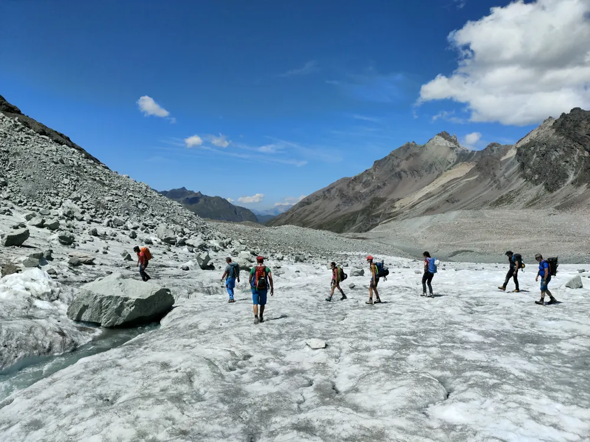

Taking part in trips
The main rules for anyone taking part in the section’s trips and courses, members and non-members, in brief. The full text is in the trip regulations (in Italian).

Before you register
Trips are open to everyone, members or not. Choose the ones that suit you.
For each trip the programme gives the technical and fitness requirements, a short description of the route, the equipment needed and the maximum number of participants. Difficulty follows the SAC scales (PDF, in Italian): sport climbing, mountaineering, aid climbing, hiking and trekking, snowshoeing, ski touring, via ferratas.
- You must have the technical and physical preparation the trip requires.
- Some trips require a preparatory trip or a course; the trip leader may ask about your recent trips.
- Youth group activities have age limits.
- If in doubt, write to the trip leader from the trip’s page.
Registration and confirmation
You register on Droptour, within the deadlines given for each trip.
- Places are allocated in order of registration, with priority for section members and then for members of other mountaineering clubs with reciprocal agreements.
- No later than 20 days before the trip the leader confirms your registration on Droptour: you are registered only once you receive the confirmation e-mail.
- In the week before the trip the leader sends the details to the participants.
- If you can no longer take part, tell the trip leaders straight away: the place goes to someone on the waiting list.
During the trip
The trip leader, usually with a co-leader, organises and leads the trip.
- A trip goes ahead with at least three participants, not counting the leaders.
- As a rule trips start even in less than ideal weather; in very bad conditions or with an obvious risk the leader may change the objective, postpone or cancel, even during the trip.
- Follow the leaders’ instructions. Anyone who does not, or who is not up to the trip, may be excluded; a safe return is still ensured.
- Anyone who leaves the group on their own initiative does so at their own risk and must tell the leader clearly.
- The leaders organise transport: public transport or shared cars wherever possible.
- Everyone brings their own technical gear; anything missing can be hired from the section.
Risks and insurance
No mountain activity is free of risk: you take part at your own risk.
By registering you declare that you are aware of the dangers, have the skills the trip requires, know how to use your gear and have found out about the route.
The section has no insurance for its activities. Every participant needs their own cover: accident, third-party liability, legal protection, and rescue and recovery costs. Except where the law provides otherwise, the section and the trip leaders are not liable for accidents or damage.
Costs
Participants share the costs of the trip; the trip leaders are volunteers.
- When travelling by private car, each participant pays 10 centimes per kilometre, shared among those who provide a car.
- If a mountain guide or other mountain professional takes part, their fee is shared among the participants.
- The leader may ask for a deposit.
- If the trip is cancelled there are no refunds: hut cancellation fees are shared among the participants and deposits returned, except for amounts kept by third parties.
- If you withdraw and nobody on the waiting list takes your place, the leader may ask you to pay costs already incurred, such as the hut deposit.
Data and photos
By registering you accept a few rules about your data.
Your data is used by the leaders and the section to organise the trip and for safety; the list of participants may be given to the other participants. Group and individual photos taken on the trip may appear in the yearbook, «Informazione», the website and the section’s social media: if you would rather they didn’t, tell the trip leader. More on the privacy page.
This page summarises the trip regulations approved by the committee on 31 March 2026. They apply to all the section’s trips, including the seniors and youth groups; some rules may differ for courses. The Italian text is binding.